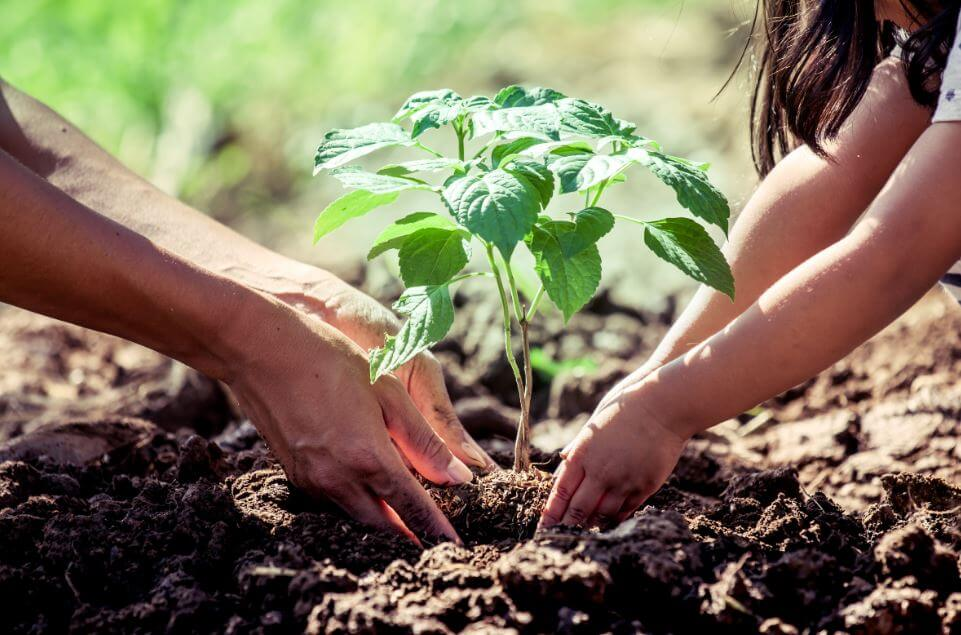
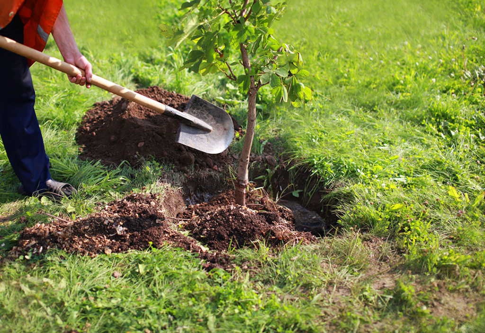

El 16 de septiembre de 2024, un grupo de estudiantes de Ingeniería de Sistemas participó en una significativa
actividad de plantación de árboles. Esta iniciativa no solo busca contribuir al medio ambiente,
sino también fomentar la responsabilidad social entre los futuros profesionales.
Al plantar árboles, estamos asegurando un futuro más sostenible y mostrando el compromiso de nuestra
carrera hacia un mundo mejor.
La actividad de plantación de árboles no solo es un ejercicio práctico, sino también una lección de vida.
Aprendimos sobre la importancia de cuidar nuestro planeta y la relevancia de cada árbol en la biodiversidad.
La experiencia nos motivó a ser agentes de cambio en nuestras comunidades.


A través de esta actividad, nos comprometimos a seguir promoviendo el cuidado del medio ambiente.
La plantación de árboles es solo el comienzo; planeamos llevar a cabo más iniciativas que generen un impacto positivo
y ayuden a preservar nuestro entorno natural para las futuras generaciones.

El compromiso con el medio ambiente debe ser continuo. Cada pequeño esfuerzo cuenta, y juntos podemos lograr un cambio significativo.